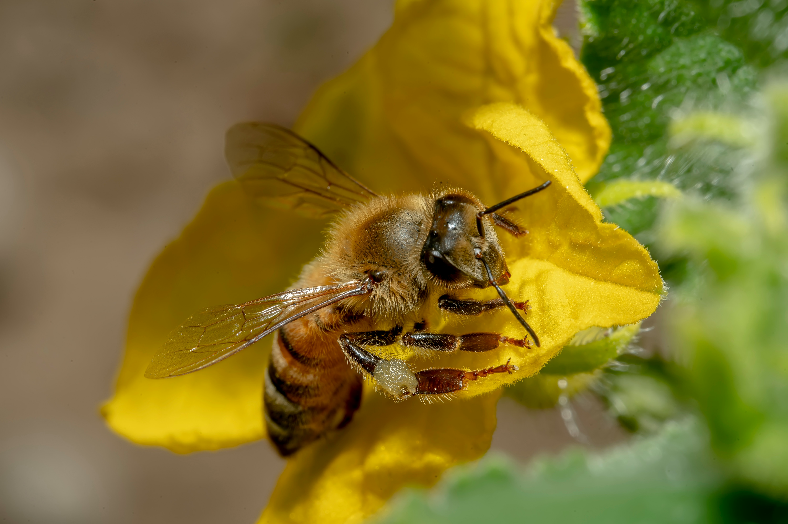

Donate to Help Bees in the UK
If you’ve found BeezKnees useful — whether you’re learning beekeeping, looking after a hive, or simply trying to make your garden more pollinator-friendly — a donation helps keep the project moving forward.
-
UK-focused guides that are practical (not fluffy).
Clear seasonal advice, disease awareness, hygiene basics, swarm safety, and beginner-friendly how-to pages.
-
Better education and better records.
Helping new beekeepers build confidence and consistency — plus tools like HiveTag that encourage regular inspection notes.
-
Pollinator-friendly advice anyone can use.
Simple actions that help bees beyond the hive: planting, habitat, and reducing harm in gardens and green spaces.
Why donate to BeezKnees?
Content that’s written for the UK
UK weather, UK seasons, UK realities. Beekeeping isn’t the same everywhere — and advice that ignores that can confuse beginners fast.
Beginner-first (without dumbing it down)
The goal is to help new beekeepers make good decisions earlier: recognising normal brood, avoiding common mistakes, keeping clean kit, and staying calm during swarm season.
Better beekeeping means healthier bees
Good husbandry reduces disease pressure, supports overwintering success, and encourages responsible treatment and hygiene — especially around varroa and brood health.
Helping beyond honeybees
Pollinator-friendly gardens support bumblebees, solitary bees and hoverflies too. If you want easy wins, see Bee Gardening.

How donations are used (transparency)
Donations go towards maintaining and improving BeezKnees — including the time and cost involved in creating new UK-focused guides, keeping pages updated, improving usability on mobile, and expanding practical resources that support responsible beekeeping and pollinator-friendly habits.
No guilt, no pressure: if you can’t donate, you can still help bees by sharing reliable information and taking simple garden actions. This page is here for people who want to support the work.
Donate securely (PayPal)
Click the button below to donate via PayPal. Any amount helps — even a small donation supports ongoing updates and new resources.
-
Share a useful page
Send beginners to Getting Started or Year in the Apiary.
-
Make a pollinator-friendly change at home
Try one easy upgrade from Bee Gardening.
-
Use (and keep) better records
Better notes lead to better decisions — see HiveTag.